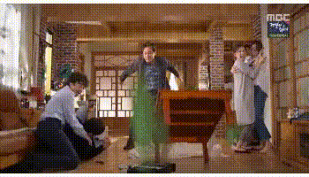

Effect 메소드 : 페이지에 애니메이션 효과를 만들기 위한 메소드
$('selector').메소드명([speed],[easing],[callback])
speed : 실행 속도(ms) / 숫자 or slow, fast
easing : 변경 되는 지점별 속도 / linear, swing
callback : 메소드 실행 후 실행할 함수
문서 객체를 크게하며 보여주거나 작게하며 사라지게 한다


첫 번째 메뉴에 대한 콘텐츠 영역입니다.
두 번째 메뉴에 대한 콘텐츠 영역입니다.
세 번째 메뉴에 대한 콘텐츠 영역입니다.
네 번째 메뉴에 대한 콘텐츠 영역입니다.
다섯 번째 메뉴에 대한 콘텐츠 영역입니다.
fadeIn : 점점 진하게 변하면서 보여지는 효과
fadeOut : 점점 희미하게 변하면서 사라지는 효과
fadeTo : 설정 값까지 희미해지는 효과 (opacity 값으로 투명도 설정)
fadeToggle : fadeIn과 fadeOut을 동시에 적용
